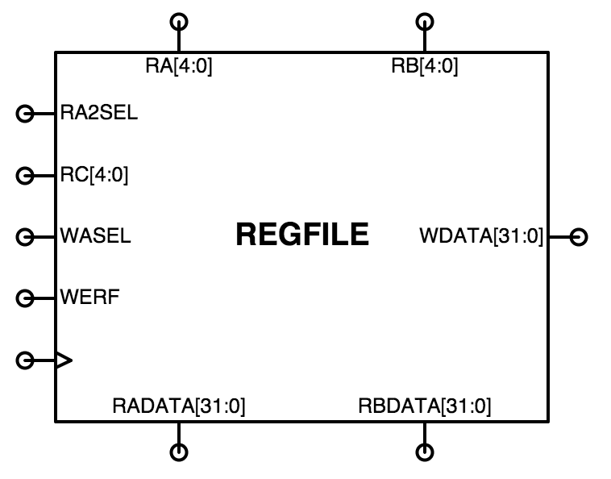
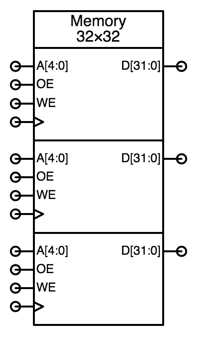
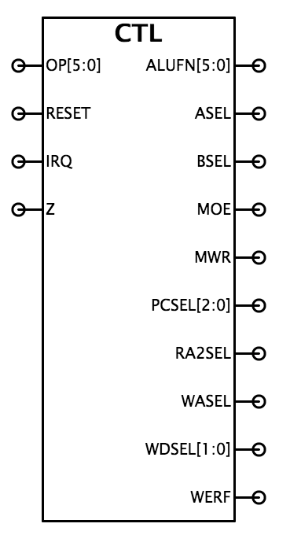
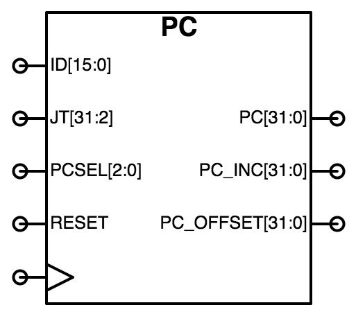

Lab 7: Building the Beta
When entering numeric values in the answer fields, you can use integers (1000, 0x3E8, 0b1111101000), floating-point numbers (1000.0), scientific notation (1e3), engineering scale factors (1K), or numeric expressions (3*300 + 100).
Useful links:
- Unpipelined Beta (PDF)
- Summary of Instruction Formats (PDF)
- Standard Cell Library
- Introduction to Jade
Problem 1. Beta Control ROM
For each of the following potential additions to the Beta instruction set, fill in the table with the control signal settings needed to execute these instructions on an unpipelined Beta. Assume the standard Beta datapath and control signals. Please choose "don't care" if the value of control signal doesn't matter when executing the instruction.
- Swap register contents with memory location
Usage: MSWP (Ra, literal, Rc) Operation: PC <- PC + 4 EA <- Reg[Ra] + SEXT(literal) tmp <- Mem[EA] Mem[EA] <- Reg[Rc] Reg[Rc] <- tmp - Move if zero
Usage: MVZ (Ra, Rb, Rc) Operation: PC <- PC + 4 if Reg[Ra] == 0 then Reg[Rc] <- Reg[Rb] - Move constant if zero
Usage: MVZ (Ra, literal, Rc) Operation: PC <- PC + 4 if Reg[Ra] == 0 then Reg[Rc] <- SEXT(literal) - Load indexed
Usage: LDX (Ra, Rb, Rc) Operation: PC <- PC + 4 Reg[Rc] <- Mem[Reg[Ra] + Reg[Rb]]
Problem 2. New ALU!
Ben Bitdiddle has proposed changing the adder unit of the Beta ALU as shown in the following diagram. His goal is to use the adder unit to compute more than just "A+B" and "A-B". The changes include one additional inverter and three additional 2-input NAND gates for each bit of the adder unit. The "x32" appearing inside the gate icons indicates that those gates are replicated 32 times to handle all 32 bits of incoming data.
- For each of the eight possible values of the three control bits
OP[2:0] indicate what operation the revised adder unit will
perform.
- To show off the capabilities of his new adder unit, Ben proposes
adding a LOOP instruction which combines branching and
decrementing in a single instruction. Ben's theory is that the
SUB/BNE instructions that appear at the end of a FOR-loop can be
combined into a single LOOP instruction. Here's his definition
for LOOP:
Usage: LOOP(Ra, label, Rc) Operation: literal = ((OFFSET(label) - OFFSET(current inst))/4) - 1 PC <- PC + 4 EA <- PC + 4*SEXT(literal) tmp <- Reg[Ra] Reg[Rc] <- Reg[Ra] - 1 if tmp != 0 then PC <- EAThe LOOP instruction behaves like a BNE in the sense that it branches if Reg[Ra] is not zero. But instead of saving the PC of the following instruction in Rc, Reg[Ra]-1 is stored in Rc instead. The destination of the branch is determined as for all branches: the literal field of the instruction is treated as a word offset, so it is sign-extended, multiplied by four and added to PC+4 to produce a new value for the PC. Usually Ra and Rc specify the same register.Consider the following instruction sequence:
loop: ADD(R1,R2,R3) LOOP(R4,loop,R4) ...Suppose R4 is initialized to 8 and then the two-instruction sequence shown above is executed. - Fill in the table with the control signal settings needed to
execute the LOOP instruction on an unpipelined Beta that includes
Ben's new adder unit. Please choose "don't care" if the value
of control signal doesn't matter when executing LOOP.;
Problem 3. Design Problem: Building the Beta
See the instructions below.
Use the Jade instance below to enter your design. To complete this design problem, select the /beta/test module and click in the Jade toolbar and the built-in tester will either report any discrepencies between the expected and actual outputs, or, if your design is correct, it will record the test passed.
The goal of this lab is to complete the design of the Beta. We'll start by working on the three major subassemblies called out in the block diagram shown below: register file, control logic, and program counter. Once those modules pass their tests, we'll work on the Beta itself, adding the ALU design from Lab 3 and the various muxes that select how the data is routed between the units.

There are design notes below suggesting how to go about the design of each of the sub-modules.
Your first step is to copy over the ALU modules you designed in Lab 4 so that we can use your ALU in the Beta. Here's what you need to do:
- In another browser window open up the "Lab 4: 32-bit ALU" exercise and scroll down to the Jade window in Problem 1. In the module toolbar at the top of the Jade window, click on to copy your /alu modules onto the module clipboard.
- Returning to this window, in the module toolbar below, click on , which will pop up a window to let you select which modules to copy into the "Building the Beta" workspace. Select all the /alu modules and click "OK", which will add the selected modules to your parts bin.
- Double-check that everything's okay by editing /alu/alu (use the Module: selection box in the module toolbar) and re-running the tests. Hopefully the tests will pass and you're good to go!
- PCSEL[2:0] will have to be modified to be 1
when the current instruction is a taken branch, i.e., when
-
the instruction is BEQ and Z is 1
the instruction is BNE and Z is 0 - If IRQ is 1, i.e., we want the Beta to take
an interrupt, the following control signals must be given the
indicated values:
-
MWR = 0
PCSEL[2:0] = 0b100
WASEL = 1
WDSEL[1:0] = 0b00
WERF = 1
- MWR needs to be forced to 0 when RESET is 1. Note that this takes precedence over any values determined by IRQ.
Here are some step-by-step design notes for tackling the Beta design.
Register File (REGFILE)
 Using the module toolbar, select the /beta/regfile module to edit. The icon for the REGFILE module is shown on the right. The module's inputs are on the left, top, and right; its outputs are on the bottom. The block diagram for the module's internal circuitry is shown on the block diagram above.
The heart of the REGFILE module is a 3-port memory, built using the MEM component (found in the toolbar above the schematic diagram). Start your design by dragging an instance of the MEM component into your schematic then editing its properties to set the number of ports to 3, the width of the address to 5 (specifying 32 locations) and the width of the data to 32. Correctly configured, the MEM component icon should look like the one shown on the right below. Note that the CLK inputs are labeled with the triangle symbol we use to indicate an input triggered by a 0→1 transition.
 Two of the ports are used from reading values from the memory. A read port is configured by setting the port's OE input to 1 (connect it to a wire labeled 1'1) and the WE and CLK inputs to 0 (connect them to wires labeled 0'1).
The third port is used for writing values into the memory. A write port is configured by setting the OE to 0 and connecting the WE and CLK to the appropriate signals. A write will occur on the rising edge of the CLK input if the WE input is a 1.
Now add the RA2SEL and WASEL address muxes to the select the addresses for the second read port and the write port. The WASEL mux input labeled XP in the block diagram is indicating the address of the XP register, i.e., register 30.
Remember to set width of each wire if the width of the wire is greater than 1. Jade will "transmit" the width information along connected wire segments, so you'll only need to set the width somewhere along the wire's run.
Note that the memory component doesn't know that location 31 of the register file should always read as zero, so you'll have to add additional logic around the memory that makes this happen. You can use muxes or ANDs to force the register data for each read port to "0" when the port address is 0b11111 (i.e., R31). Note that the address for the second read port comes from the output of the RA2SEL mux, so that's the value that needs to be tested for that port.
When you're ready to test your circuit, click the green checkmark to run the provided tests that verify your circuit has the functionality described above. If an error is reported, look at the TEST aspect and read the comments associated with that particular test cycle.
Now would be a good time to save your work :)
The failure notification will tell you which signal failed verification and the simulated time at which the mismatch between the actual value and expected occurred. The tests are actually a sequence of 100ns testing cycles and the reported time will be at the end of one of the cycles when the output values are checked for correctness.
Move your mouse over the plot of the appropriate signal waveform until the vertical time cursor is approximately at the failure time. Then double-click to zoom in on the plots around that particular time; zoom in enough so that all the signals for that testing cycle are readable. Now you can figure out what the circuit was being asked to do for that particular test and, hopefully, deduce why your circuit is producing an incorrect output.
Control Logic (CTL)
 Using the module toolbar, select the /beta/ctl module to edit. The icon for the PC module is shown on the right. The module's inputs are on the left, its outputs are on the right.
The heart of the CTL module is the control ROM, a 64-entry lookup table addressed by the 6-bit opcode field of the instruction OP[5:0], which outputs the appropriate values for the 18 control signals. The ROM can be constructed using MEM component configured to have one read port and with its Contents property initialized with the appropriate values (see the Control logic table in the Unpipelined Beta diagram). That diagram also has a table of ALUFN values that will be useful when filling in the ALUFN[5:0] values for each instruction.
The contents property should be a list of 64 18-bit values. You can use extra whitespace and the standard "//" and "/* ... */" comment conventions to make contents more readable. "+" and "_" can be used to separate subfields and will be ignored by the contents parser. You can use "?" to indicate a "don't care" value for a particular digit in a numeric value; it will be replaced by a 0 when Jade builds the ROM contents.
To get you started, we've provided a control ROM contents file which you can copy-and-paste into the contents property of the MEM component. You should then edit the control signal values specified for each of the 64 opcodes so that the ROM will generate the signals necessary for the Beta to correctly execute instructions with that particular opcode.
In this file the control signals have been set as if the corresponding opcode was an illegal instruction, i.e., using the ILLOP column of the Control logic table. The contents are formatted so that ALUFN[5] is the most-significant bit of the 18-bit output and WERF is the least-significant bit — see the comments in the file for the exact order of the signals in each binary value. There's an 18-bit binary value specifying the control signals for each of the 64 opcodes, listed in opcode order. There's a comment at the end of each line that indicates the opcode number and the corresponding Beta opcode, if any. Here's a small excerpt from the middle of the file:
// alufn[5:0]
// asel, bsel
// moe, mwr
// pcsel[2:0]
// ra2sel
// wasel, wdsel[1:0], werf
0b??????_??_?0_011_?_1001 // 0b100000 ADD
0b??????_??_?0_011_?_1001 // 0b100001 SUB
0b??????_??_?0_011_?_1001 // 0b100010 MUL
0b??????_??_?0_011_?_1001 // 0b100011 DIV
0b??????_??_?0_011_?_1001 // 0b100100 CMPEQ
0b??????_??_?0_011_?_1001 // 0b100101 CMPLT
0b??????_??_?0_011_?_1001 // 0b100110 CMPLE
0b??????_??_?0_011_?_1001 // 0b100111
The first 6 bits on a line specify the values for ALUFN[5:0],
the next 2 bits specify the values for ASEL and BSEL,
and so on.
Some of the outputs of the control ROM will have to be modified by external logic before connecting the appropriate output of the CTL module:
Program Counter (PC)
 Using the module toolbar, select the /beta/pc module to edit. The icon for the PC module is shown on the right. The module's inputs are on the left, its outputs are on the right. The block diagram for the module's internal circuitry is shown on the block diagram above.
The heart of the PC module is the 32-bit register that holds the current value of the program counter, which is the address in main memory of the instruction to be executed in the current clock cycle, PC[31:0]. The high-order bit of the register, PC[31], is used as the supervisor bit. When the supervisor bit is 0, the Beta is in user mode, executing programs normally with interrupts enabled. When the supervisor bit is 1, the Beta is in supervisor mode (sometimes called kernel mode), executing kernel code with interrupts disabled.
The PC register can be built using the DREG component from the parts library. You should include hardware for the bottom two bits of the PC even though they are always 0; this will make debugging traces easier to interpret.
The 5-input 32-bit PCSEL multiplexer selects the value to be loaded into the PC register at next rising edge of the clock. Since the standard cell library doesn't have any 5-input multiplexers, you'll have to construct the logic that selects the next PC using a combination of other components. Remember to add a way to set the PC to 0x80000000 on reset. We'll use the RESET signal to force the PC to 0x80000000 during the first cycle of operation. We'll describe each of the PCSEL input values in more detail below.
The PC module contains two 32-bit adders, which you can build as ripple-carry adders using full-adder module you used in the Lab 3 in the ARITH module of the ALU.
-
The PC+4 adder simply adds 4 to the output of the PC
register, computing the address of the instruction following the
current instruction. The output of this adder forms the
PC_INC[30:0] output of the PC module. Since we don't want
to allow a program to increment itself from user mode to supervisor
mode, we don't want to use the high-order bit of this adder's
output. Instead, ignore the high-order bit from the PC+4 adder and
use a jumper to connect PC[31] to PC_INC[31],
ensuring the supervisor bit remains unchanged when
PC_INC[31:0] is chosen as the next value of the PC.
The branch-offset adder is responsible for computing the address of instruction specified by the literal field in BEQ and BNE instructions. That address is \((\textrm{PC}+4) + 4\cdot\textrm{SXT}(\textrm{ID[15:0]})\), i.e., multiplying the sign-extended 16-bit literal field of the instruction by 4 to convert the word offset into a branch offset, then adding that to the address of the next instruction. Both the sign extension and multiply-by-4 can be done with appropriate wiring — no gates required! The output of this adder forms the PC_OFFSET[30:0] output of the PC module. For exactly the same reasons given above, ignore the high-order bit from the output of the branch-offset adder and use a jumper to connect PC[31] to PC_OFFSET[31].
Here are some more details about the five inputs to the PCSEL mux.
-
PCSEL=0. This input is selected during "normal" execution when the
next instruction to be executed is the one after the current instruction,
so connect this input to PC_INC[31:0].
PCSEL=1. This input is selected when a branch instruction is "taken", i.e., the next instruction is at the address PC_OFFSET[31:0].
current PC[31] JT[31] next PC[31]
0 -- 0
1 0 0
1 1 1
PCSEL=3. This input is selected when the current instruction has an illegal opcode, so we want to set the next PC to 0x80000004. It's easy to create a 32-bit-wide wire with the appropriate constant value: simply label the wire with a name of the form number'width. In this case we want the label 0x80000004'32.
PCSEL=4. This input is selected when the Beta is taking an interrupt, so we want to set the next PC to 0x80000008.
Everything else
Now it's time to put it all together: using the module toolbar, select the /beta/beta module to edit. This implementation of the Beta subcircuit has the following terminals:
| clk | input | clock (from test circuitry): a 10MHz square wave creating a 100ns clock period. |
| reset | input | reset (from test circuitry): set by the test circuitry to 1 until after the first rising edge of clk, then set to 0 to start the Beta running. |
| irq | input | interrupt request (from test circuitry): set by the test circuitry to 1 to interrupt execution of a running user-mode program (i.e. programs where PC[31] = 0), saving PC+4 in Reg[XP], and setting the PC to 0x80000008. |
| ia[31:0] | outputs | instruction address (PC[31:0] from the PC module): address of the next instruction to be executed. This sent to the first read port of main memory. |
| id[31:0] | inputs | instruction data (from test circuitry). After the appropriate propagation delay, the main memory will drive these signals with the contents of the memory location specified by ia[31:0]. |
| ma[31:0] | outputs | memory data address (from ALU): address of data location in main memory to be read or written. This is sent to second read port of main memory. |
| mrd[31:0] | inputs | memory read data (from test circuitry): if moe is 1, the main memory will drive these signals with the contents of the memory location specified by ma[31:0]. |
| moe | output | memory read data output enable (from control logic): should be set to 1 when the Beta want to read the contents of the memory location specified by ma[31:0]. |
| mwd[31:0] | outputs | memory write data (from register file): if wr is 1, this is the data that will be written into memory location ma[31:0] at the end of the current cycle. |
| mwr | output | memory write enable (from control logic): Set to 1 when the Beta wants to store into the memory location specified by ma[31:0] at the end of the current cycle. NOTE: this signal should always have a valid logic value at the rising edge of CLK otherwise the contents of the memory will be erased. You'll need to take care in designing the logic that generates this signal — see the CTL section above for details. |
Next step: add the appropriate components to the Beta schematic and create connections shown in the block diagram above. Note that the Instruction and Data memories (shown in grey) will be provided by the test circuitry and are not part of your Beta design. You'll need instances of your PC, CTL, REGFILE and ALU modules along with the following:
-
BSEL mux: The low-order 16 bits of the instruction need to be
sign-extended to 32 bits. Sign-extension is easy in hardware! Just
connect id[15:0] to the low-order sixteen D1 inputs
of the mux and id[15] to each of the high-order sixteen
D1 inputs.
ASEL mux and Z logic: these are added to the RADATA[31:0] port of the register file. When connecting the PC_OFFSET output from the PC module to the "1" input of the ASEL mux, you should ignore the high-order bit and use 0'1 instead, since we don't want to use the supervisor bit as part of the LDR address.
WDSEL mux: this 3-input 32-bit multiplexer will select the data to be written into the register file from one of three possible sources. Sorry, no MUX3 in the parts bin, but you can use a MUX4 and tie an input to 0'32.
IRQ logic: the Beta should only respond to an external interrupt request when it's executing in user mode, i.e., when PC[31] is 0. You'll need to add some logic to ensure this functionality when generating the IRQ input to the CTL module.
Almost nobody's design executes the checkoff program correctly the first time — it will take some effort to debug your design, but stick with it. If you're stuck, get help from your fellow students or the course staff. When it works, congratulations! The design of a complete CPU at the gate level is a significant accomplishment. Of course, now the fun is just beginning — there are undoubtedly many ways you can make improvements, both large and small.
Good luck! By finishing you'll earn your very own "Beta Inside" sticker ☺
Appendix: Test program
The BSim instance below shows the Beta program used to test the functionality of your Beta implementation. You may find it useful to compare the cycle-by-cycle operation of your circuit with the cycle-by-cycle execution of the test program in the BSim simulator. Note that any changes you make below (e.g., adding breakpoints) will not be saved when leaving this window.